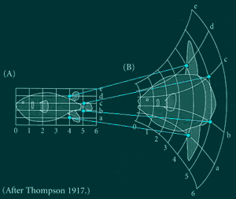
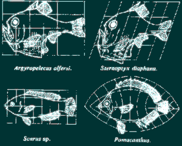

BIOGRAFÍA
D'arcy Thompson nació en Edinburgo en 1860 y murió en San
Andrés en 1948.
Su padre era profesor de griego, de quien recibió el amor por los
clásicos a muy temprana edad. A pesar de ello, decidió estudiar
ciencias en la universidad.
Se graduó de Cambridge como bachiller en zoología en 1883
y obtuvo su doctorado 29 años después, en 1923. En 1884
D'arcy Thompson fue contratado como profesor de biología en Dundee
(y luego incorporado como parte de la universidad de San Andrés
en 1897) y en 1917 fue designado a la "Chair of Natural Historiry"
en San Andrés.
SU CAMPO
D'arcy era un estudioso de los clásicos griegos, un naturalista
y además, un matemático. De hecho, fue el primer biomatemático,
a pesar de seguir una tradición de un naturalista con grandes dotes
matemáticas llamado Buffon. Su comprensión de la matemáticas
era moderna pero basada en los fundamentos del entender griego.
SU APERTURA
A pesar de haber escrito alrededor de 300 publicaciones, entre artículos
científicos y libros, toda su agudeza comparece en su libro más
famoso: "Del crecimiento y de la Forma"
(1917). Este libro asume que todas las ciencias y el conociemiento son
una sola disciplina, y hay intentos de vincular fenómenos biológicos
a las matemáticas. El postula que todos los animales y las plantas
pueden ser entendidos en términos puramente matemáticos:
"Yo sé que en el estudio de la materia, el número,
el orden y la posición son la clave coyuntural para acceder al
conocimiento exacto; y son estas tres, en las manos de un matemático
donde florecen las primeras líneas para elaborar un dibujo del
universo."
ENTRE LA CIENCIA Y LAS HUMANIDADES
Ha sido una ley inmemorial que la ciencia y las humanidades han ido siempre
de la mano. Aristóteles, el naturalista escribió poesía;
Platón era una amante de la astronomía; Teófrates
el botánico era un maestro de la retórica, incluso admirado
por Cicero; Celso el médico era un historiador. Cuando la tradición
humanista estaba en su edad dorada, Galeno e Hipócrates eran leídos
por todos. Incluso más allá, nuestros doctores, herederos
entusiastas de la tradición clásica, escribieron con ojos
de poetas, el severo "Systema Naturae" fue el trabajo de quien
cayó de rodillas ante la Madre Naturaleza y dijo: "Natura,
Filia Dei, rerum omnium Magistra, autodidactos, indesinenter laborans,
nunquam festinans."
(naturaleza, hija de Dios, instructora de todas las cosas, autodidacta,
inclaudicable trabajadora, nunca a prisa.)
Bibliografía
D'Arcy
Wentworth Thompson
A TRIBUTE TO D'ARCY
THOMPSON
D'Arcy
Wentworth Thompson, 1860--1948
SYMMETRY
AS A DEVELOPMENTAL PRINCIPLE IN NATURE AND ART
Shape Changes
in Biology
Using
a computer to visualise change in biological organisms

